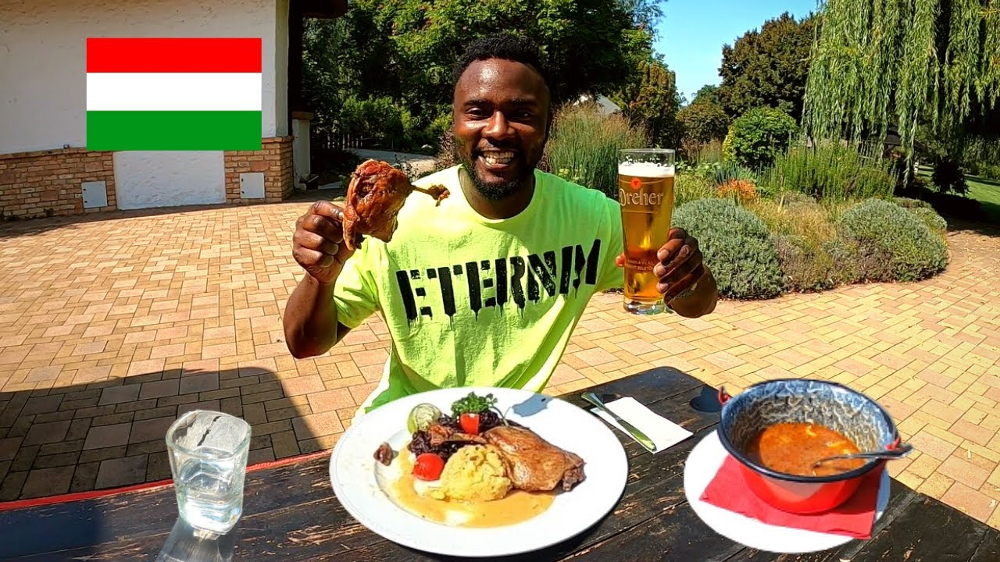

Goulash recepie
Ingredients
1 kg pork shoulder
2 medium red peppers - 500 g
2 large carrots - 300 g
3 medium onions - 300 g
4 large cloves of garlic
70g of pork lard
2 cups of vegetable stock
3 spoons of concentration of tomatos
2 spoons of paprica
1/2 spoon of salt
1/2 spoon of peper
pinch of chili powder
Recipe
Cut the meat into cubes of about 1,5 cm. Cut the bacon into small cubes. Peel and dice the onion. Peel and slice the carrots. Cut the peppers into cubes.
In a wide pot, heat a tablespoon of olive oil, add bacon and onions, fry them. Add the other tablespoon of oil, put in the carrots and peppers and stir-fry everything for a few minutes.
Meanwhile, in a separate pan, heat lard (or oil) and fry the meat pieces. Season them with salt and pepper and transfer them to the pot with the vegetables. If we have you can water the whole thing down with about 1/3 cup of wine (red or white) and on a higher heat evaporate for a while.
Season the contents of the pot with ground bell pepper and if you have bear garlic. Pour in hot broth (or stock) in an amount to cover the ingredients. Add soy sauce, allspice and bay leaf, cover and simmer on low heat for about 1 and 1/2 hours, until the meat is tender. Finally, add tomato paste and golden fried sliced mushrooms.
In a frying pan, heat the butter well, add the flour and sauté a while stirring. Transfer to the pot, stir thoroughly and bring to a boil.
